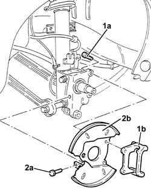

3310B59 rear brake disc guard - r r
- Path
- Procedures > 33 BRAKING SYSTEM > 3310 DISC BRAKES > 3310B REAR DISC BRAKES > 3310B59 rear brake disc guard - r r
- Kind
- repair procedure (removal / refitting; the operation number is the code)
- Applies to
- all engines; all production periods
- Interactive page
- https://sloeber94.github.io/elrnDB-a156/en/#/3238051
Applies to: all engines; all production periods
 Removing
Removing
 Refitting
Refitting4450B11 WHEEL (one) rear - R.R.
4450D10 hub of one rear wheel, l/h or r/h - r+r with wheel removed
1. Unscrew screws (1a) and remove rear brake caliper bracket (1b).
2. Unscrew screw (2a) and remove rear brake disc guard (2b).

Applies to: all engines; all production periods
Refitting
RemovingMount rear brake disc guard and fix it with its screw.
Mount rear brake caliper bracket and fix it with its screws to the couple.
 | Fastening | Component | Ø | Value (daNm) |
|---|---|---|---|---|
- | Bolt | REAR BRAKE CALIPER BRACKET | M10 | 4.7 - 5.8 |
4450D10 hub of one rear wheel, l/h or r/h - r+r with wheel removed